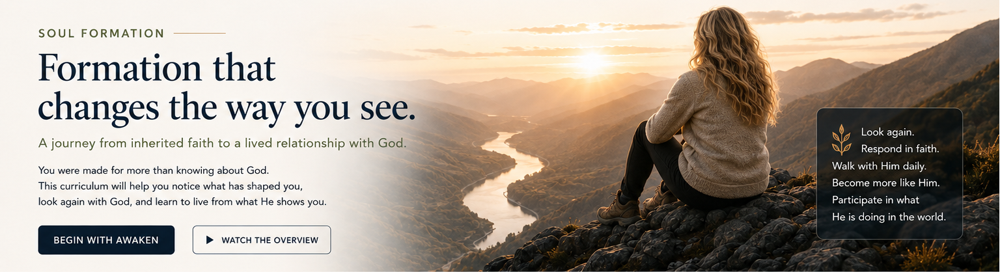

AWAKEN
Become aware of
what has shaped you.

SOUL FORMATION
A journey from inherited faith to a lived relationship with God.
You were made for more than knowing about God. This curriculum will help you notice what has shaped you, look again with God, and learn to live from what He shows you.
Become aware of
what has shaped you.
Learn to see God
and reality more clearly.
Allow His life to
transform your heart
and character.
Participate with God
in what He is doing
in the world.
Interactive questions and prompts help you surface what you naturally assume, believe, or expect.
LEARN MOREScripture, teaching, and reflection invite you to consider another way of seeing.
LEARN MOREPractical steps and moments of response help you live from what God shows you.
LEARN MOREWE’RE PREPARING SOMETHING TRANSFORMATIVE.STAY TUNED.